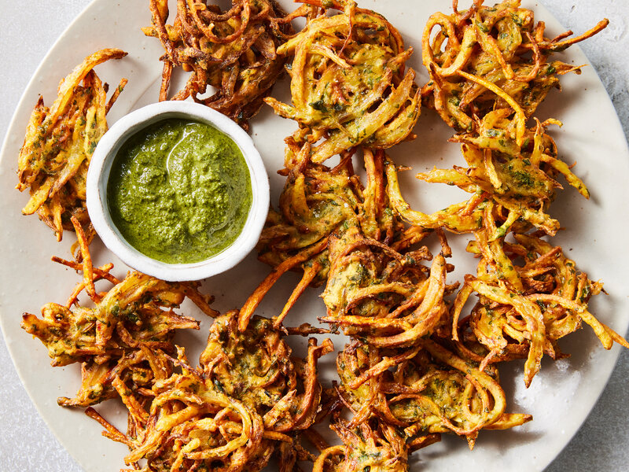
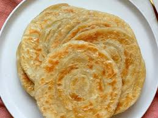

Samosas are a staple food in India known for their delicous filling. They're made of a dough that contains a filling of boiled or mashed potatos with peas, ginger, green chilli, and many different spices. Samosas are usually eaten during meals as an appetizer and are extremely popular in Indian street foods, with many vendors selling them as a snack for a cheap price.
 For more info on Samosas!
For more info on Samosas!
Biryani is a fragrant and flavorful rice dish made by layering spiced basmati rice with marinated meat, seafood, or vegetables. Slow-cooked with aromatic spices, it’s known for its rich taste and irresistible aroma. Originating from the Indian subcontinent, Biryani is a beloved dish with many regional variations enjoyed worldwide.
 For more info on briyani!
For more info on briyani!
Butter Chicken is a classic Indian dish made with marinated & grilled chicken (Tandoori chicken), simmered in a creamy tomato gravy/curry. The sauce is super silky, buttery, aromatic and mildly spicy. This lip-smacking and delicious dish is hugely popular among the Indian food lovers across the world.
 For more info on butter chicken!
For more info on butter chicken!
Gulab jamun are soft delicious berry sized balls made with milk solids, flour & a leavening agent. These are soaked in rose flavored sugar syrup & enjoyed. The word “Gulab” translates to rose in Hindi & “jamun” to berry. So gulab jamun are berry sized balls dunked in rose flavored sugar syrup.
 For more info on gulab jamun!
For more info on gulab jamun!
Rasgulla is a popular Indian dessert made from soft and spongy chhena (cottage cheese) balls cooked in a light sugar syrup. These delicate and juicy treats are known for their melt-in-the-mouth texture and subtle sweetness. The word "Rasgulla" combines "Ras," meaning juice, and "Gulla," meaning ball, in Hindi. Originating from the eastern regions of India, Rasgulla is a beloved sweet, often enjoyed during festivals and special occasions.
 For more info on rasgulla!
For more info on rasgulla!
Pakora is a popular Indian snack made by dipping vegetables, meat, or paneer in a seasoned chickpea flour batter and deep-frying them until crispy. Known for its crunchy texture and spicy flavors, Pakora is often served with chutneys as a tasty appetizer or tea-time snack. This savory treat is enjoyed across the Indian subcontinent, especially during monsoon season.
 For more info on pakora!Dosa is a crispy, thin pancake made from fermented rice and urad dal (lentil) batter. It is a popular South Indian dish, known for its light texture and savory flavor. Often served with a variety of chutneys and sambar (lentil soup), dosa is a versatile dish that can be enjoyed as a snack, breakfast, or main meal. Its deliciously crispy edges and soft center make it a beloved favorite across India and beyond.
 For more info on Dosa!
For more info on Dosa!
Paratha is a soft, flaky flatbread made from whole wheat dough, often stuffed with various fillings like potatoes, paneer, or vegetables. A staple in Indian cuisine, it's typically cooked on a griddle with ghee or oil for a golden, crispy texture. Paratha can be enjoyed with yogurt, pickles, or curry, and is loved for its versatility, making it a popular choice for breakfast or any meal throughout the day.
 For more info on Paratha!